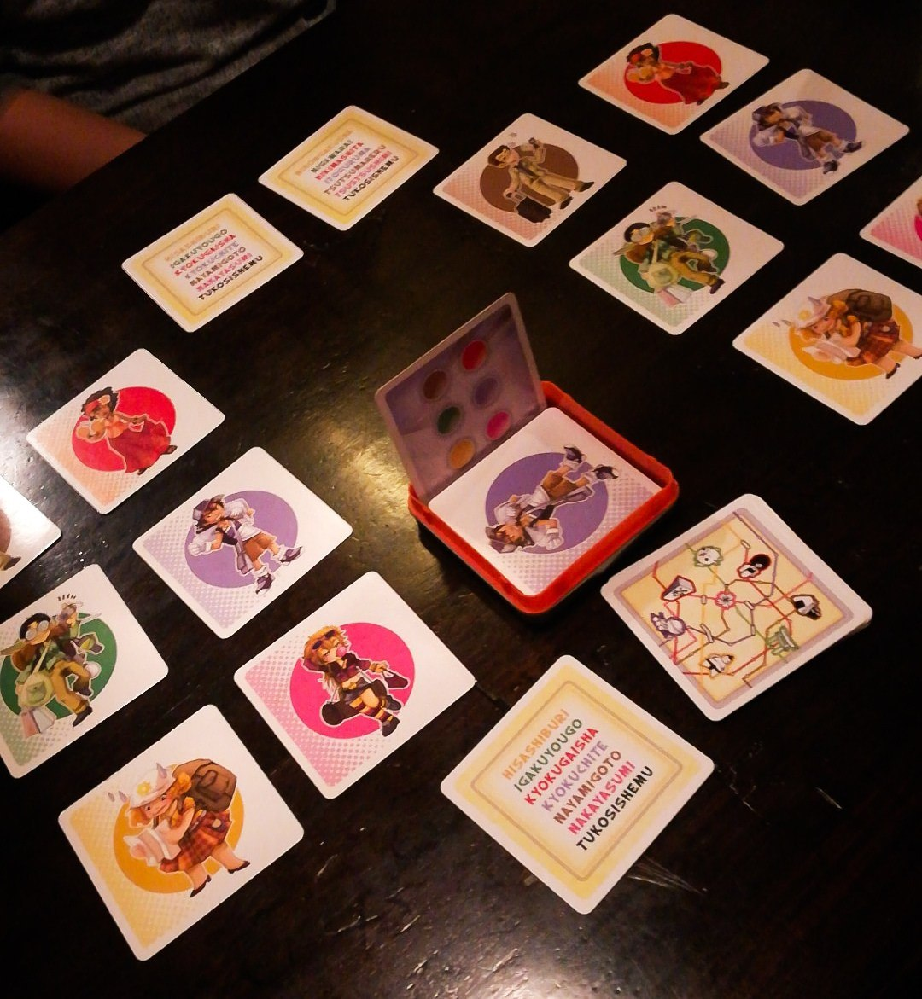

TOKYO TRAIN

10 minuti 4-8 8+
Dopo aver separato le carte, si formano squadre da 2 giocatori nelle quali uno interpreterà
la parte del giapponese (operaio dei treni) e il suo compagno quella di un turista. I giapponesi si siedono tutti dallo
stesso lato del tavolo e i turisti dal lato opposto, in corrispondenza del proprio compagno di squadra.
Viene poi distribuita una carta “indicazioni” a ciascun giocatore, facendo attenzione a dare carte identiche
ai giocatori che formano una squadra; infatti le carte “indicazioni” contengono un elenco di 6 parole in giapponese
(inventate) che corrispondono ad altrettanti colori (es.: tsutsumareru = rosso, tsutsushimi = verde, ecc).
Questo "codice" deve poter essere decriptato solo dal proprio compagno di squadra e questo è il motivo per cui
le carte indicazioni sono uguali a due a due, facendo sì che le altre squadre usino diverse parole per indicare
i colori (ed aumentando la confusione durante il gioco).
A questo punto si decide chi inizierà ad interpretare il ruolo del Giapponese e chi quello del turista.
Ai turisti vengono consegnate le carte passeggero, in 6 colori diversi, che verranno sistemate davanti a
ciascun giocatore in una formazione 2x3. I giocatori giapponesi pescano quindi una carta compartimento che
indicherà la disposizione iniziale dei passeggeri, uguale per tutte le squadre in gioco.
Dopo che tutti hanno uniformato la propria posizione iniziale, è il momento di dare il via alla partita.
Un giocatore giapponese pesca un’altra carta compartimento e la sistema sull’apposita basetta in plastica,
al centro del tavolo, in modo che sia ben visibile a tutti i giocatori giapponesi, ma nascosta agli occhi dei turisti.
Ora ciascun giapponese (contemporaneamente!) dovrà far capire al suo compagno di squadra come risistemare i
passeggeri affinché raggiungano la posizione finale, indicata dalla carta scompartimento appena pescata.
Non si possono nominare i colori, non si possono indicare le carte e non si possono pronunciare altre parole
ad eccezione di quelle mostrate dalla carta indicazioni.
Si hanno a disposizione solo tre ordini:
-scambio verticale lungo, agitando le braccia protese in avanti su e giù (si devono cioè scambiare verticalmente
di posto due carte non adiacenti tra loro);
-scambio verticale corto, agitando alternandole le braccia protese in avanti (si devono scambiare verticalmente
di posto due carte adiacenti tra loro);
-scambio orizzontale, incrociando le braccia alternativamente davanti al petto (si scambiano tra loro due carte
adiacenti in posizione orizzontale).
Il giocatore giapponese deve quindi prima menzionare la carta che vuole far spostare dal suo compagno,
indicandone il colore attraverso il codice in giapponese, e contemporaneamente indicare che tipo di spostamento
vuole che questa carta subisca. Se ad esempio volesse far scambiare di posto la carta rossa e quella verde che
sono adiacenti orizzontalmente, e presupponendo che il verde sia indicato dalla parola Ogiekaki, dovrebbe incrociare
le braccia ritmicamente davanti a se, urlando al suo compagno "ogiekaki, ogiekaki, ogiekaki!" finché questi non esegue
correttamente l’ordine.
Il giapponese quindi urlerà nella propria lingua e gesticolerà all’indirizzo del turista che cercherà di cogliere
il senso di tutto ciò, ridisponendo al giusto posto i 6 passeggeri della metropolitana.
Se il turista commette degli errori, si può annullare l’ultimo ordine eseguito urlando "tukosishemu!", ma in nessun
caso dicendo: "no, sbagliato, ecc..." o facendo cenni con la testa.
Il giapponese che per primo riesce a far sistemare al suo compagno le carte nella disposizione corretta dovrà urlare
"Tokyo Train!", ponendo così fine al round.
La carta compartimento appena usata viene presa dalla coppia vincitrice e rappresenterà 1 punto; gli altri giocatori
dovranno uniformare la posizione delle proprie carte passeggero a quella dei vincitori, dopodiché verrà pescata
un’altra carta compartimento ed un nuovo round avrà inizio.
Dopo i primi 3 round i giocatori si scambiano di ruolo per ulteriori 4 round, in modo tale da giocare in tutto 7 round.
Chi avrà più punti alla fine del 7° round sarà il vincitore.
RECENSIONE
Questo gioco è di facile comprensione, perciò adatto a tutti. Tokyo train è coinvolgente, per vincere la partita è necessario comprendere al meglio la comunicazione del tuo compagno di squadra attraverso la gestualità del corpo (abilità mimiche), ma ciò non basta perché serve anche la velocità. La partita è comica e molto caotica ci si fa grandi risate anche se si è spettatori esterni, però dopo varie partite il gioco diventa ripetitivo.